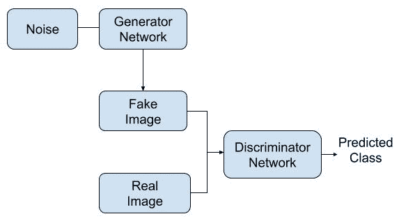
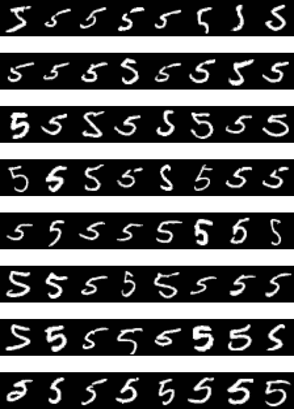
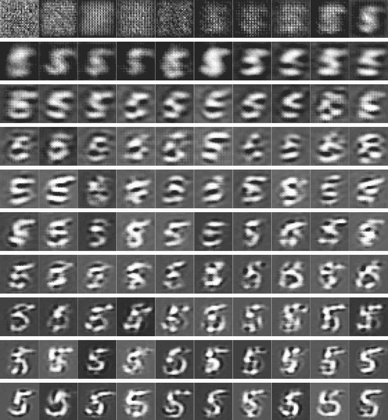
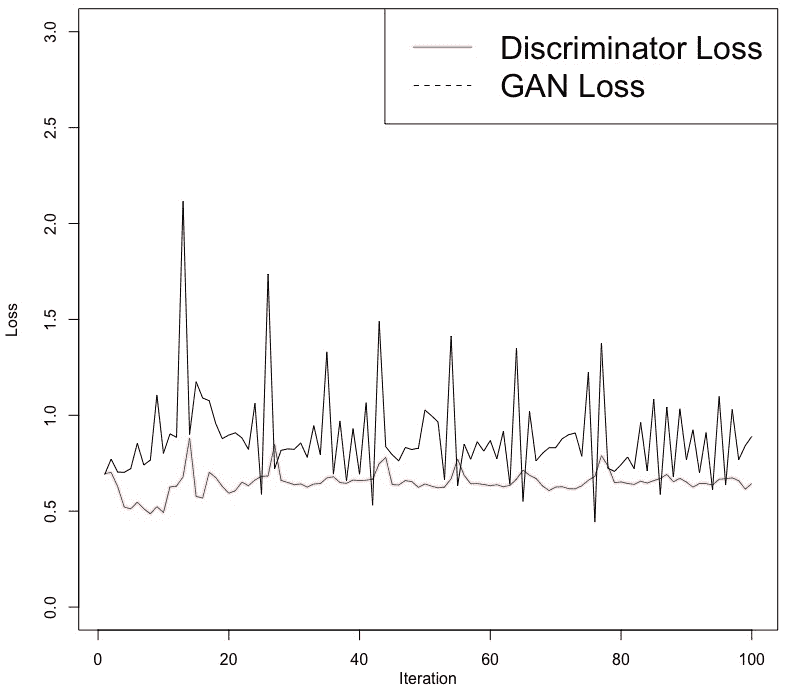

本章通过一个实例说明了生成对抗网络 ( GANs )在生成新图像中的应用。到目前为止，在本书中，我们使用图像数据说明了深度网络在图像分类任务中的应用。然而，在这一章中，我们将探索一种有助于创建新图像的有趣且受欢迎的方法。生成对抗网络已经被应用于生成新图像、提高图像质量以及生成新文本和新音乐。GANs的另一个有趣的应用是在异常检测领域。在这里，GAN被训练来生成被认为是正常的数据。当该网络用于重建被认为不正常或异常的数据时，结果的差异可以帮助我们检测异常的存在。在本章中，我们将看一个生成新图像的例子。
更具体地说，在本章中，我们将讨论以下主题:
gan利用两个网络:
对于发电机网络，提供噪声数据作为输入，噪声数据通常是从标准正态分布生成的随机数。显示生成性对抗网络的概述的流程图如下:

如前面的流程图所示，生成器网络使用噪声数据作为输入，并试图创建一个我们可以标记为假的图像。这些假图像，连同表示它们是假的标签，被作为输入提供给鉴别器网络。除了标记的假图像，我们还可以提供带有标签的真实图像作为鉴别器网络的输入。
在训练过程中，鉴别器网络试图区分由生成器网络创建的假图像和真实图像。当开发生成性对抗网络时，该过程继续，使得生成器网络尽最大努力生成鉴别器网络不能归类为假的图像。与此同时，鉴别器网络在正确区分真假图像方面变得越来越好。
当生成器网络学会一致地产生在训练数据中不可用的图像并且鉴别器网络不能将它们分类为假的时，就实现了成功。对于本章中的真实图像，我们将使用包含手写数字图像的MNIST训练数据。
在接下来的部分中，我们将说明为了开发手写数字五的生成性对抗网络，我们需要遵循的步骤，该网络在MNIST数据中可用。
在本节中，将使用Keras库，其中也包括MNIST数据。我们还将利用EBImage库，它对处理图像数据很有用。MNIST数据包含从0到9的手写图像。让我们看一下下面的代码来理解这些数据:
# Libraries and MNIST data
library(keras)
library(EBImage)
mnist <- dataset_mnist()
str(mnist)
List of 2
$ train:List of 2
..$ x: int [1:60000, 1:28, 1:28] 0 0 0 0 0 0 0 0 0 0 ...
..$ y: int [1:60000(1d)] 5 0 4 1 9 2 1 3 1 4 ...
$ test :List of 2
..$ x: int [1:10000, 1:28, 1:28] 0 0 0 0 0 0 0 0 0 0 ...
..$ y: int [1:10000(1d)] 7 2 1 0 4 1 4 9 5 9 ...
从前面的代码中，我们可以观察到以下情况:
在这一章中，我们将仅使用来自训练数据的数字5来训练生成性对抗网络并生成数字5的新图像。
虽然可以开发一个生成性对抗网络来生成所有10个数字，但对于刚入门的人来说，建议只从一个数字开始。让我们来看看下面的代码:
# Data on digit five
c(c(trainx, trainy), c(testx, testy)) %<-% mnist
trainx <- trainx[trainy==5,,]
str(trainx)
int [1:5421, 1:28, 1:28] 0 0 0 0 0 0 0 0 0 0 ...
summary(trainx)
Min. 1st Qu. Median Mean 3rd Qu. Max.
0.00 0.00 0.00 33.32 0.00 255.00
par(mfrow = c(8,8), mar = rep(0, 4))
for (i in 1:64) plot(as.raster(trainx[i,,], max = 255))
par(mfrow = c(1,1))
如前面的代码所示，我们选择了包含数字五的图像，并将其保存在trainx中。trainx的结构向我们展示了5421幅这样的图像，它们的尺寸都是28×28。汇总函数显示trainx中的值范围从0到255。在下图中可以看到训练数据中手写数字五的前64个图像:

这些手写图像显示出很大的可变性。由于不同的人有不同的书写风格，这种可变性是可以预料的。虽然这些数字大部分都写得很清楚，很容易辨认，但也有一些不太清楚。
为了给后面的步骤准备数据，我们将调整trainx的形状，使其尺寸为5，421 x 28 x 28 x 1，如以下代码所示:
# Reshaping data
trainx <- array_reshape(trainx, c(nrow(trainx), 28, 28, 1))
trainx <- trainx / 255
这里，我们还将trainx中的值除以255，以获得0到1之间的值范围。数据按照要求的格式处理后，我们可以继续开发发电机网络的架构。
生成器网络将用于从以噪声形式提供的数据中生成假图像。在本节中，我们将开发发电机网络的架构，并通过总结网络来了解相关参数。
让我们看看开发生成器网络架构的代码:
# Generator network
h <- 28; w <- 28; c <- 1; l <- 28
gi <- layer_input(shape = l)
go <- gi %>% layer_dense(units = 32 * 14 * 14) %>%
layer_activation_leaky_relu() %>%
layer_reshape(target_shape = c(14, 14, 32)) %>%
layer_conv_2d(filters = 32,
kernel_size = 5,
padding = "same") %>%
layer_activation_leaky_relu() %>%
layer_conv_2d_transpose(filters = 32,
kernel_size = 4,
strides = 2,
padding = "same") %>%
layer_activation_leaky_relu() %>%
layer_conv_2d(filters = 1,
kernel_size = 5,
activation = "tanh",
padding = "same")
g <- keras_model(gi, go)
在前面的代码中，我们可以观察到以下情况:
现在，我们来看看这个网络的总结。
发电机网络概述如下:
# Summary of generator network model
summary(g)
____________________________________________________________________________
Layer (type) Output Shape Param #
============================================================================
input_7 (InputLayer) [(None, 28)] 0
____________________________________________________________________________
dense_4 (Dense) (None, 6272) 181888
____________________________________________________________________________
leaky_re_lu_8 (LeakyReLU) (None, 6272) 0
____________________________________________________________________________
reshape_2 (Reshape) (None, 14, 14, 32) 0
____________________________________________________________________________
conv2d_6 (Conv2D) (None, 14, 14, 32) 25632
____________________________________________________________________________
leaky_re_lu_9 (LeakyReLU) (None, 14, 14, 32) 0
____________________________________________________________________________
conv2d_transpose_2 (Conv2DTranspose) (None, 28, 28, 32) 16416
____________________________________________________________________________
leaky_re_lu_10 (LeakyReLU) (None, 28, 28, 32) 0
____________________________________________________________________________
conv2d_7 (Conv2D) (None, 28, 28, 1) 801
============================================================================
Total params: 224,737
Trainable params: 224,737
Non-trainable params: 0
_______________________________________________________________________________________
生成器网络的摘要显示了输出的形状和每层的参数数量。请注意，最终的输出形状是28 x 28 x 1。将要生成的假图像将具有这些尺寸。总的来说，对于这个网络，我们有224，737个参数。
现在我们已经指定了发生器网络的结构，我们可以开发鉴别器网络的架构。
鉴别器网络将用于对假图像和真图像进行分类。本节将讨论网络的体系结构和总结。
用于开发鉴别器网络架构的代码如下:
# Discriminator network
di <- layer_input(shape = c(h, w, c))
do <- di %>%
layer_conv_2d(filters = 64, kernel_size = 4) %>%
layer_activation_leaky_relu() %>%
layer_flatten() %>%
layer_dropout(rate = 0.3) %>%
layer_dense(units = 1, activation = "sigmoid")
d <- keras_model(di, do)
从前面的代码中，我们可以观察到以下内容:
鉴别器网络的总结显示了每层的输出形状和参数数量:
# Summary of discriminator network model
summary(d)
___________________________________________________
Layer (type) Output Shape Param #
===================================================
input_10 (InputLayer) [(None, 28, 28, 1)] 0
___________________________________________________
conv2d_12 (Conv2D) (None, 25, 25, 64) 1088
____________________________________________________
leaky_re_lu_17 (LeakyReLU) (None, 25, 25, 64) 0
____________________________________________________
flatten_2 (Flatten) (None, 40000) 0
____________________________________________________
dropout_2 (Dropout) (None, 40000) 0
____________________________________________________
dense_7 (Dense) (None, 1) 40001
====================================================
Total params: 41,089
Trainable params: 41,089
Non-trainable params: 0
_____________________________________________________
这里，第一层的输出大小为28 x 28 x 1，这与伪图像和真实图像的尺寸相匹配。参数总数为41，089。
现在，我们可以使用以下代码编译鉴别器网络模型:
# Compile discriminator network
d %>% compile(optimizer = 'rmsprop',
loss = "binary_crossentropy")
这里，我们使用rmsprop优化器编译了鉴别器网络。对于损失，我们指定了binary_crossentropy。
接下来，我们冻结鉴频器网络的权重。请注意，我们在编译鉴别器网络后冻结了这些权重，以便它仅将它们应用于gan模型:
# Freeze weights and compile
freeze_weights(d)
gani <- layer_input(shape = l)
gano <- gani %>% g %>% d
gan <- keras_model(gani, gano)
gan %>% compile(optimizer = 'rmsprop',
loss = "binary_crossentropy")
这里，生成对抗网络的输出(gano)使用具有固定权重的生成器网络和鉴别器网络。生成对抗网络(gan)以gani和gano为基础。然后用rmsprop优化器和指定为binary_crossentropy的损耗编译网络。
现在，我们准备训练网络。
在本节中，我们将对网络进行培训。在训练网络时，我们将保存假图像并存储损失值，以查看训练进度。它们将帮助我们在创建逼真的假图像时评估网络的有效性。
我们将从指定培训过程中需要的一些东西开始。让我们来看看下面的代码:
# Initial settings
b <- 50
setwd("~/Desktop/")
dir <- "FakeImages"
dir.create(dir)
start <- 1; dloss <- NULL; gloss <- NULL
从前面的代码中，我们可以观察到以下内容:
接下来，我们将训练模型。这里，我们将使用100次迭代。让我们回顾一下这方面的代码，代码被总结为五点:
# 1. Generate 50 fake images from noise
for (i in 1:100) {noise <- matrix(rnorm(b*l), nrow = b, ncol= l)}
fake <- g %>% predict(noise)
# 2. Combine real & fake images
stop <- start + b - 1
real <- trainx[start:stop,,,]
real <- array_reshape(real, c(nrow(real), 28, 28, 1))
rows <- nrow(real)
both <- array(0, dim = c(rows * 2, dim(real)[-1]))
both[1:rows,,,] <- fake
both[(rows+1):(rows*2),,,] <- real
labels <- rbind(matrix(runif(b, 0.9,1), nrow = b, ncol = 1),
matrix(runif(b, 0, 0.1), nrow = b, ncol = 1))
start <- start + b
# 3. Train discriminator
dloss[i] <- d %>% train_on_batch(both, labels)
# 4. Train generator using gan
fakeAsReal <- array(runif(b, 0, 0.1), dim = c(b, 1))
gloss[i] <- gan %>% train_on_batch(noise, fakeAsReal)
# 5. Save fake image
f <- fake[1,,,]
dim(f) <- c(28,28,1)
image_array_save(f, path = file.path(dir, paste0("f", i, ".png")))}
在前面的代码中，我们可以观察到以下情况:
注意，通常，生成性对抗网络的训练过程需要大量的计算资源。然而，我们在这里使用的例子是为了快速说明这个过程是如何工作的，并在合理的时间内完成培训过程。对于100次迭代和8 GB内存的计算机，运行所有代码应该不到一分钟。
在本节中，我们将回顾从100次迭代中获得的网络损耗。我们还将看看从迭代1到100使用假图像的进展。
从我们的100次迭代中获得的鉴别器和GAN损耗值可以绘制如下。鉴别器损耗基于伪图像和真实图像的损耗值:
从前面的图中，我们可以得出以下结论:
我们将使用以下代码读取假图像，然后绘制它们:
# Fake image data
library(EBImage)
setwd("~/Desktop/FakeImages")
temp = list.files(pattern = "*.png")
mypic <- list()
for (i in 1:length(temp)) {mypic[[i]] <- readImage(temp[[i]])}
par(mfrow = c(10,10))
for (i in 1:length(temp)) plot(mypic[[i]])
在前面的代码中，我们利用e image库来处理假图像数据。我们已经阅读了保存在FakeImages目录中的所有100张图片。现在，我们可以在10 x 10的网格中绘制所有图像，如下图所示:

在前面的图像中，显示了100次迭代中的第一个伪图像。由此，我们可以做出如下观察:
在下一节中，我们将通过对网络进行一些更改并观察其对网络训练过程的影响来进行实验。
在本节中，我们将通过在发生器网络和鉴别器网络中插入额外的卷积层来进行实验。通过这个实验，我们将传达性能优化技巧和最佳实践。
发电机网络中的变化显示在以下代码中:
# Generator network
gi <- layer_input(shape = l)
go <- gi %>% layer_dense(units = 32 * 14 * 14) %>%
layer_activation_leaky_relu() %>%
layer_reshape(target_shape = c(14, 14, 32)) %>%
layer_conv_2d(filters = 32,
kernel_size = 5,
padding = "same") %>%
layer_activation_leaky_relu() %>%
layer_conv_2d_transpose(filters = 32,
kernel_size = 4,
strides = 2,
padding = "same") %>%
layer_activation_leaky_relu() %>%
layer_conv_2d(filters = 64,
kernel_size = 5,
padding = "same") %>%
layer_activation_leaky_relu() %>%
layer_conv_2d(filters = 1,
kernel_size = 5,
activation = "tanh",
padding = "same")
g <- keras_model(gi, go)
在这里，我们可以看到，在发电机网络中，我们在最后一层之前添加了layer_conv_2d和layer_activation_leaky_relu层。发电机网络的参数总数已增加到276，801。
鉴别器网络中的变化如以下代码所示:
# Discriminator network
di <- layer_input(shape = c(h, w, c))
do <- di %>%
layer_conv_2d(filters = 64, kernel_size = 4) %>%
layer_activation_leaky_relu() %>%
layer_conv_2d(filters = 64, kernel_size = 4, strides = 2) %>%
layer_activation_leaky_relu() %>%
layer_flatten() %>%
layer_dropout(rate = 0.3) %>%
layer_dense(units = 1, activation = "sigmoid")
d <- keras_model(di, do)
这里，我们在鉴频器网络的平坦层之前添加了layer_conv_2d和layer_activation_leaky_relu层。鉴别器网络中的参数数量增加到148，866个。我们保持其他一切不变，然后再次训练网络100次迭代。
现在，我们可以评估这些变化的影响。
100次迭代的鉴频器和GAN损耗值可绘制如下:

从前面的图中，我们可以观察到以下情况:
下面的图是100次迭代中每一次迭代的第一个伪图像:

从前面的图像中，我们可以观察到以下情况:
接下来，我们将尝试使用这个网络来生成另一个手写数字。
在本实验中，我们将使用与上一个实验相同的网络体系结构。但是，我们将使用它来生成数字8的手写图像。该实验中100次迭代的鉴别器和GAN损耗值可绘制如下:

从前面的图中，我们可以得出以下结论:
每次迭代的第一个伪图像的图如下:

与数字五相比，数字八在开始形成可识别的模式之前需要更多的迭代。
在本节中，我们在发生器和鉴频器网络中试验了额外的卷积层。由于这一点，我们可以作出以下观察:
在这一章中，我们使用了一个生成对抗网络来说明如何生成单个手写数字的图像。生成对抗网络利用两个网络:生成器和鉴别器网络。生成器网络从包含随机噪声的数据中创建假图像，而鉴别器网络被训练来区分假图像和真实图像。这两个网络相互竞争，从而可以创建逼真的假图像。虽然在这一章中，我们提供了一个使用生成对抗网络来生成新图像的例子，但是这些网络也已知在生成新文本或新音乐以及异常检测中具有应用。
在这一部分，我们讨论了各种用于处理图像数据的深度学习网络。在下一节中，我们将讨论自然语言处理的深度学习网络。